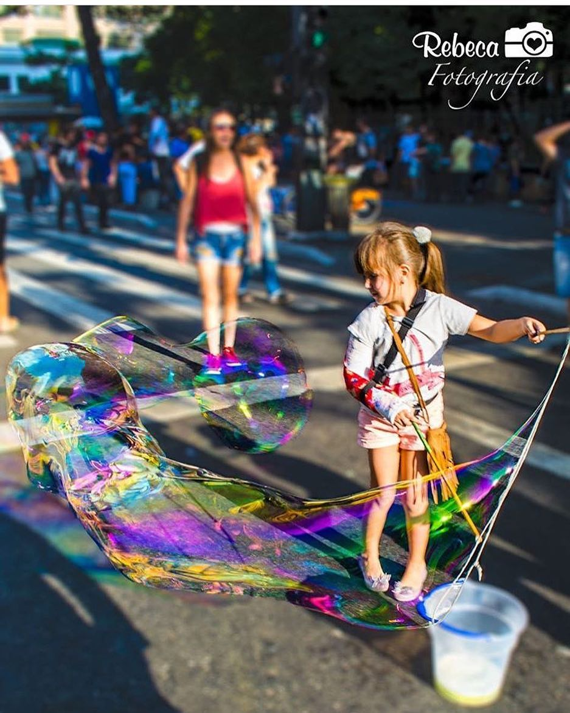
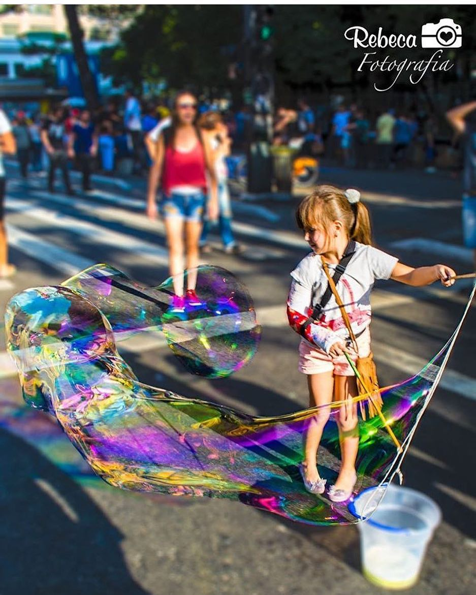
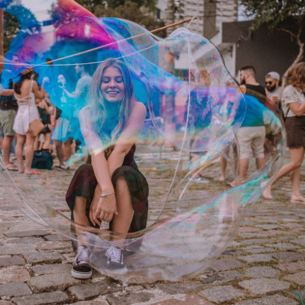
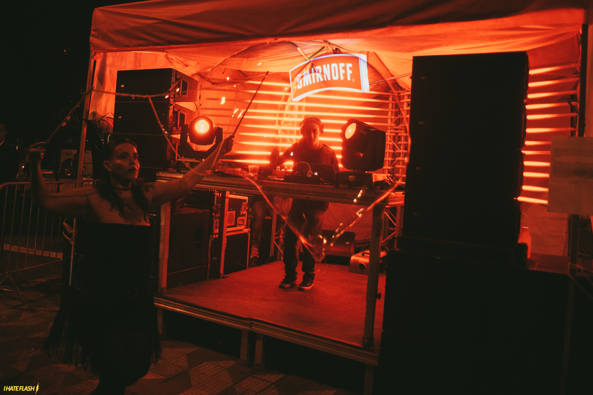
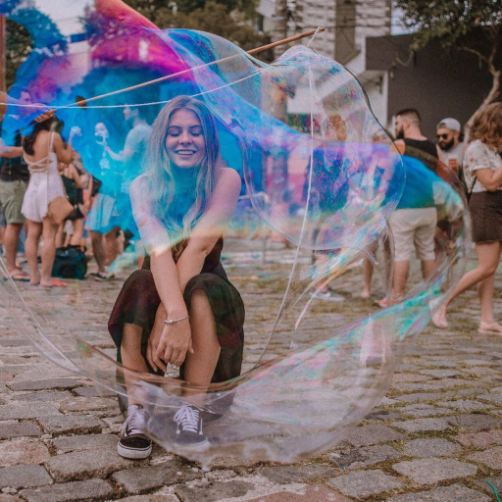
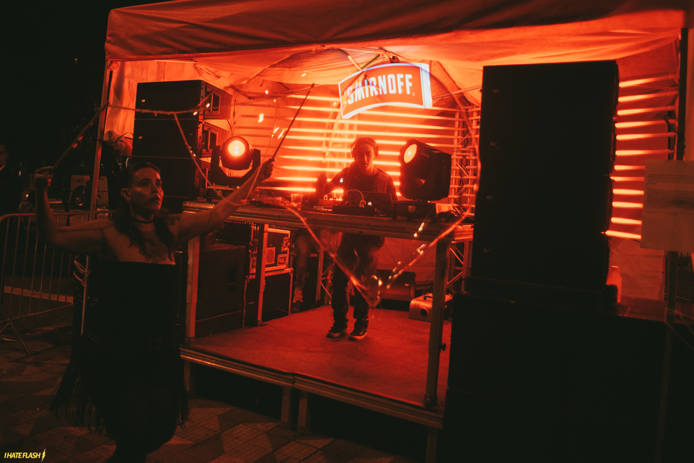
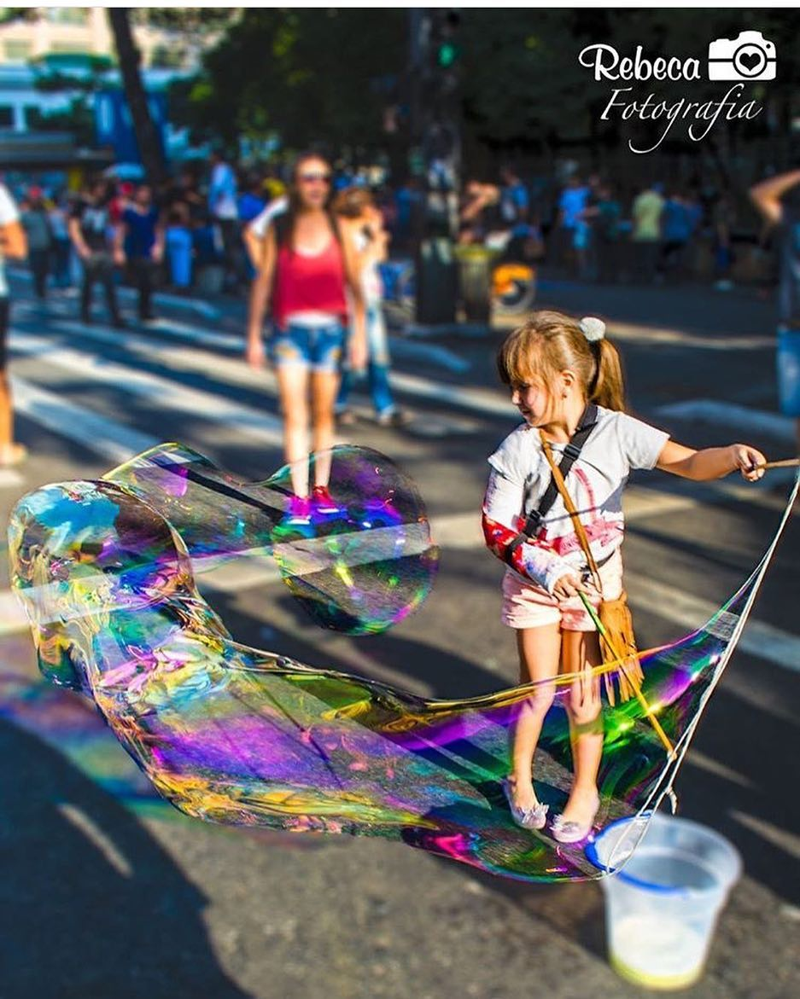
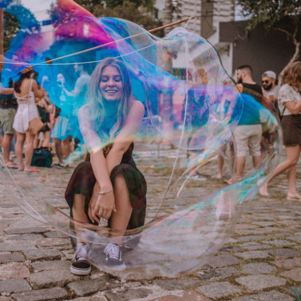
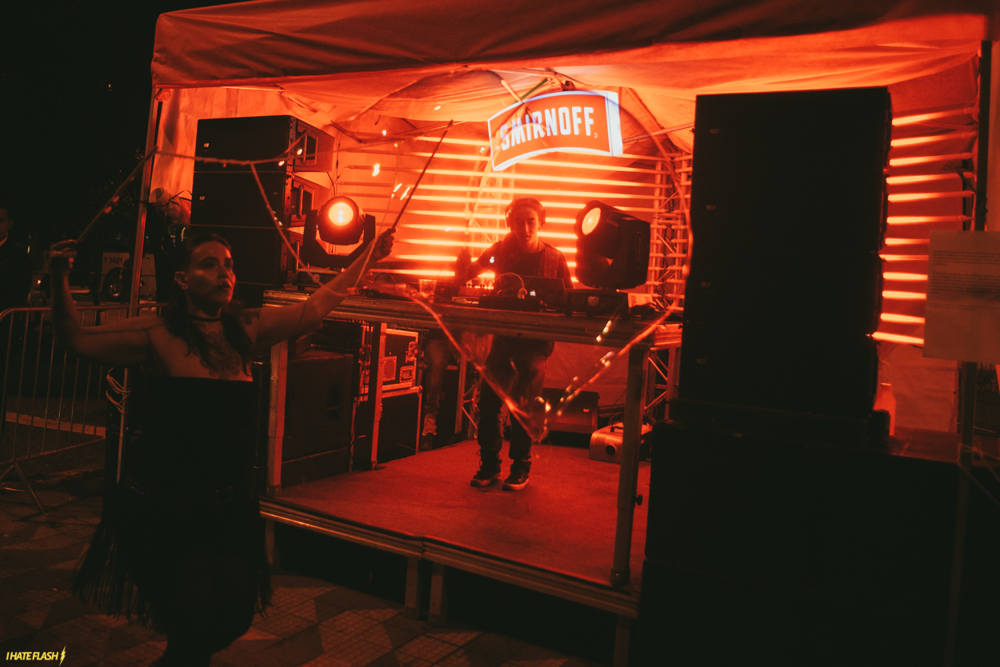

Portifólio
 

 



Estamos juntos para resgatar memórias perdidas, deslocar os cotidianos, estreitar as relações, nos lugares em que os artistas se unem para criar experiências únicas.De uma maneira incompreensível, a bolha de sabão quando nasce resgata suas memórias afetivas que estavam adormecidas. Surge um universo de afetividade e sensibilidade, que conversa involuntariamente direto com o ser sobre a temporariedade do instante, gerando relações que vão além do nosso entendimento sobre o fluxo permanente e o movimento ininterrupto que atua na lei do universo.
De uma maneira incompreensível, a bolha de sabão quando nasce resgata suas memórias afetivas que estavam adormecidas. Surge um universo de afetividade e sensibilidade, que conversa involuntariamente direto com o ser sobre a temporariedade do instante, gerando relações que vão além do nosso entendimento sobre o fluxo permanente e o movimento ininterrupto que atua na lei do universo.
Ver maisCom brinquedos fabricados por nós, ensinamos os participantes a fazerem bolhas gigantes e a fórmula secreta que compõem o líquido magico. A experiencia completa fica por conta das atividades que proporcionam os participantes a: entrarem dentro de uma bolha gigante participar da chuva de bolhas e outras atividades.
Ver mais


